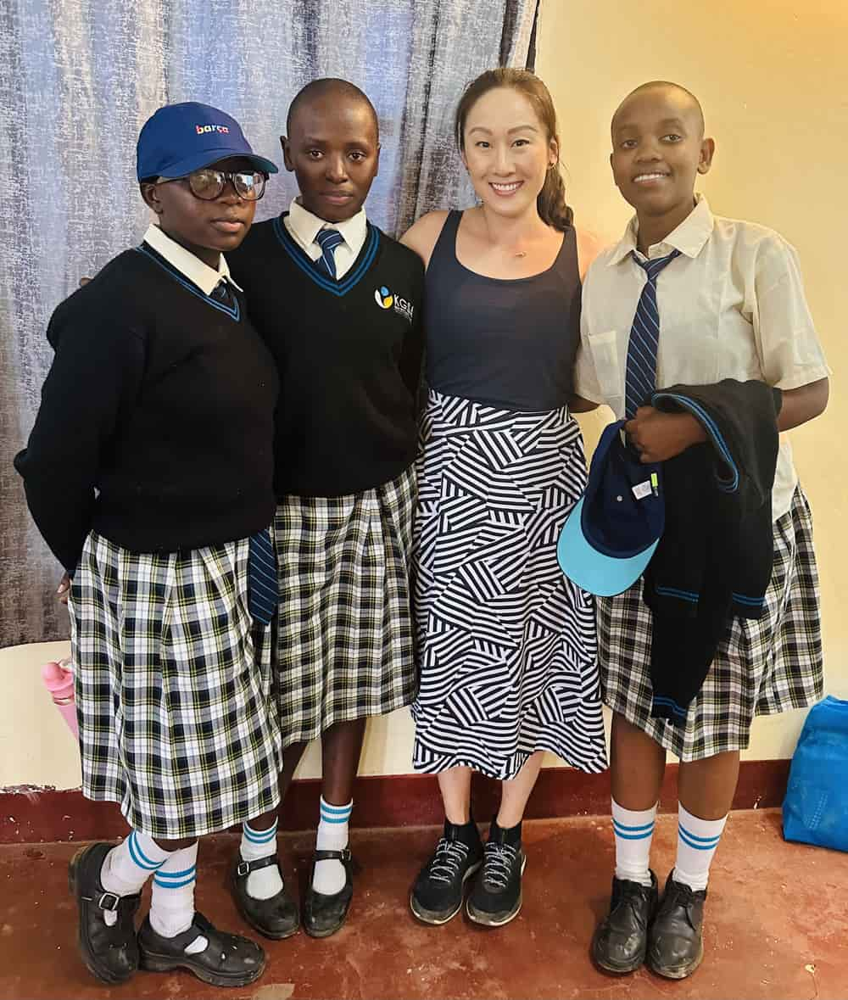

Joo Ree Chu is a School Psychologist with a wide breadth of professional experience. For over a decade she has worked in
both public and private school settings to support children, their caregivers, teachers, and school leadership. She
believes every parent is the expert of their child and wants the best for them. When it comes to educational matters,
Joo Ree is committed to partnering with families to guide and support them through uncertainty and setbacks. Her work is
driven by the principle that supportive and equitable learning environments result in better outcomes for all.
Joo Ree is the proud mother of two children who have attended both public and private schools. She understands the
trials and tribulations of parenthood and what it means to take life one day (sometimes one hour!) at a time. She is a
lifelong dancer, swimmer, and enjoys finding respite in nature. Joo Ree also enjoys traveling abroad to learn about
different cultures and educational systems to broaden her professional perspective. JRC Partnerships is honored to
redistribute 10% of all service fees to community-serving organizations in the U.S. and overseas.
Learning from student ambassadors at the Kibera Girls Soccer Academy in Nairobi
Learning from student ambassadors at the Kibera Girls Soccer Academy in Nairobi
Carleton College
University of Minnesota, Twin Cities
University of Colorado, Denver
Colorado Charter School
Colorado Public District
Colorado Private School
Minnesota Public District
JRC Partnerships offers a tiered pricing scale based on each family’s financial circumstances. Your tier will be determined prior to executing a service agreement. A free 20-minute consultation is offered for all new clients. Please submit your request using the Inquiry Form.
“Gave us clarity with a very complex system”
“Joo Ree’s insights were invaluable while we were deciding
if we should proceed with an ASD evaluation. She gave us so
much clarity with a very complex system. She was compassionate,
knowledgeable, and made a difficult and confusing time feel so
much more feasible.”
“Gave us insight to navigate DPS with confidence”
“Meeting with Joo Ree was invaluable. Joo Ree gave us insight to navigate DPS’s Byzantine process with
confidence. Joo
Ree identified which buttons to push and what words to say. DPS evaluated our daughter shortly after
meeting with her.
Prior to meeting Joo Ree we spent months running around in circles, sending emails and leaving
voicemails that were left
unanswered. I wish we had connected with Joo Ree sooner!”
“Provided the ‘white glove’ treatment from beginning to end”
“JRC Partnerships provided comprehensive services to help determine the best school for my daughter’s
Kindergarten year.
From the initial consultation and questionnaire, I felt “held” and comforted knowing that Joo Ree would
take the time to
understand my daughter’s educational needs and also consider our family needs (e.g., commute, cost,
preferences of
public vs private school). She really seemed to “get” my daughter’s learning style and catered her
search to schools
that would be exactly right for her. Joo Ree’s preparedness and professionalism shone through to myself
and to school
staff. She attended every school tour and asked administration direct - sometimes hard - questions. They
responded
candidly, perhaps because they appreciated her demeanor and the research involved in knowing which
questions to ask.
What I appreciated most about Joo Ree was her candor with me. She clearly stated her professional
opinions, so that I
could make informed decisions. She respected my feedback and my own instincts about what might be a good
fit for our
family. Joo Ree gently nudged me away from a school that I loved, but was not a match for my daughter’s
learning style
and needs. JRC Partnerships provided the “white glove” treatment from beginning to end, and we could not
be happier with
my daughter’s final placement!”
“An incredible asset in this field”
I have had the absolute pleasure of working with Joo Ree since my
early days as a clinical psychologist. We first worked together
when she was the school psychologist at the Montessori School of
Denver, and I found her to be one of the most collaborative individuals
I came across in my work with various schools and providers.
I always
appreciated Joo Ree's perspectives on students and the systems they
were in, and her efforts to enact change on multiple levels, not just
with the individual. She has a real gift of holding empathy and understanding
for challenging situations, but also guiding families and educators toward solutions.
When she shifted away from work in the schools, Joo Ree remained a wonderful
presence in my professional life. I have so much trust in her knowledge and lens,
and her passion for this work is evident in everything she undertakes.
I'm excited for this next chapter in her professional journey, and see her as an incredible
asset in this field!
“Enlightening and helpful”
“Through the years I have referred countless clients to JRC Partnerships
and every single one of them has taken the time to come back to us and say
that the experience was enlightening and helpful. Here are just a few examples
of families I sent Joo Ree’s way:
● A family deciding whether to keep their child at the school they love or
move him to a different school that could better accommodate his learning needs.
● A family that needed data to determine whether the current school placement
was in fact honoring their IEP commitment.
● A family that received a thorough and well-written neuropsychological evaluation,
but were still confused by the results and how the findings would impact their child
on a day-to-day basis as well as at school. Joo Ree was able to break down the
evaluation in an easy-to-understand format.
● A family that needed to pull their child from private school due to medical needs
and needed input in how to manage curriculum while continuing his education through
home-schooling.
“Truly understands the needs of neurodiverse students”
I would highly recommend Joo Ree for your child's educational consulting needs.
As an experienced and highly trained school psychologist, Joo Ree truly understands
the needs of neurodiverse students and is able to quickly uncover what supports
they need both in and outside of school to perform their best. Joo Ree also has
in-depth knowledge of the school system, as well as private evaluation clinics in
the metro-Denver area, and knows how to collaborate effectively with multidisciplinary
teams. She is a wonderful resource for the community and a true leader in the field of
educational psychology.